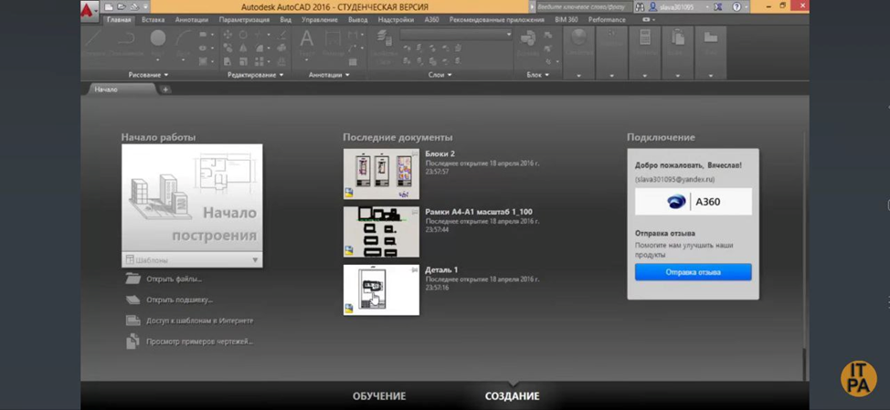
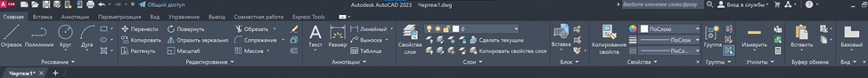
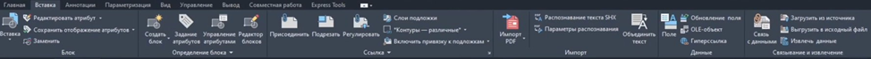
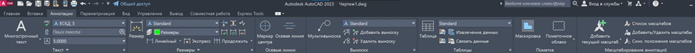
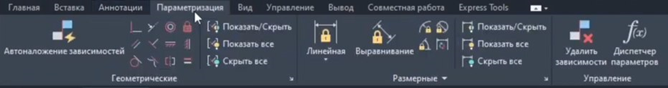
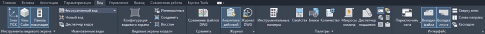
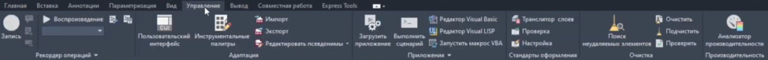
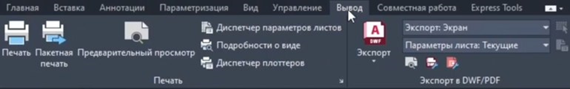
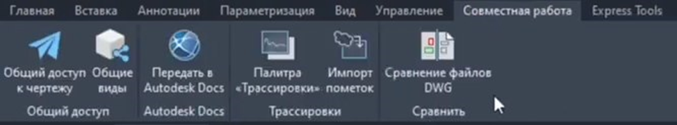
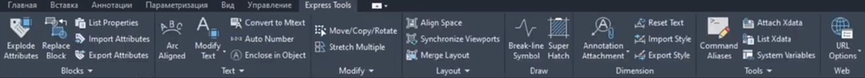

Обзор AutoCAD

AutoCAD представляет собой профессиональное программное обеспечение для автоматизированного проектирования (CAD), предназначенное для создания точных 2D-чертежей и 3D-моделей. Программа широко применяется инженерами-проектировщиками в разделах ЭОМ, СС, ОВ, ВК для разработки рабочих чертежей, схем и документации.

Несмотря на повсеместное внедрение BIM (информационного моделирования), которое становится стандартом, особенно для государственных объектов, AutoCAD остается:
- Фундаментальным инструментом для 2D-черчения, деталировки узлов, оформления спецификаций.
- Необходимым навыком для работы с большинством подрядчиков, изготовителей и в рамках проектов реконструкции.
- Основой и дополнением для работы в среде BIM (создание и редактирование семейств, деталировок).
- Официально признанным форматом для предоставления графической части проектной документации.
Ваша задача – освоить AutoCAD не как просто программу для рисования линий, а как средство создания технически грамотных, нормативных документов.
Перейдем к изучению интерфейса и базовых инструментов, которые составляют основу работы инженера.
При запуске программы открывается лента инструментов с вкладками: Главная, Вставка, Аннотации, Параметры вида, Просмотр. Центральная область - рабочая область чертежа с координатной сеткой и командной строкой внизу. Панель Свойства и Диспетчер слоев расположены справа.
Давайте рассмотрим подробнее ленту инструментов.
Вкладка «Главная» – на ней находятся все самые часто используемые команды, необходимые для создания чертежа. Включает в себя инструменты рисования и редактирования, настроку слоев, аннотации, утилиты, блоки, настройку видов.

Вкладка «Вставка» – содержит инструменты для работы с внешними ссылками, подложками, блоками и атрибутами.

Вкладка «Аннотации» – предназначена для работы с аннотационными элементами. Это размеры, текстовые аннотации, примечания, выноски, маркировки и другие инструменты.

Вкладка «Параметризация» – на ней представлены инструменты для создания геометрических ограничений и размерных зависимостей. Например, что две линии всегда должны быть параллельными или находятся на определенном расстоянии друг от друга.

Вкладка «Вид» – предназначена для навигации, настройки видовых экранов и отображения объектов в рабочем окне.

Вкладка «Управление» – позволяет управлять настройками пользовательского интерфейса.

Вкладка «Вывод» – на ней представлены инструменты вывода на печать или экспортировать в файл.

Вкладка «Совместная работа» – на ней представлены инструменты для возможности одновременной работы над чертежом.

Вкладка «Express Tools» – это утилиты, которые разработаны самой компанией Autodesk для автоматизации рутинных задач.

Настройка рабочего пространства и шаблоны (DWT)
Профессиональная работа начинается с правильной настройки.
Основные настройки на старте проекта:
- Единицы измерения: Миллиметры.
- Точность: 0.0 мм (для строительных чертежей).
- Пределы чертежа (Limits): устанавливаются в соответствии с форматом листа (А4, А3, А1) и масштабом.
Шаблон (DWT-файл) – основа стандартизации:
Грамотный специалист работает не с чистого листа, а с фирменного шаблона. Ваш шаблон для ВК должен содержать:
- Предустановленные слои (Layers) – это один из самых важных инструментов AutoCAD для организации чертежа с названиями, цветами и типами линий по внутреннему стандарту компании (напр., ВК_Трубы_ХВС, ВК_Трубы_К1, ВК_Оборудование, ВК_Размеры, ВК_Текс).
- Текстовые стили (Text Styles). Рекомендуемые шрифты для совместимости: ISOCPEUR, Arial.
- Размерные стили (Dimstyles): Настроенные для разных масштабов (1:50, 1:100, 1:200).
- Блоки (Blocks) – это группировки объектов, которые можно использовать многократно. Для проектировщика это экономия времени и единообразие чертежей: Библиотека условных обозначений: сантехприборы, задвижки, клапаны, редукторы, водомерные узлы, ревизии, крепления.
Создание блока:
- Выберите объекты для блока
- Используйте команду BLOCK
- Задайте имя, точку вставки
- Нажмите «ОК»
Примеры блоков для ВК:
- Сантехнические приборы (умывальники, унитазы)
- Запорная арматура (вентили, краны)
- Колодцы
- Готовые рамки и штампы основных форматов (А4, А3, А2, А1) с заполненными постоянными реквизитами.
| Название слоя | Цвет | Тип линии | Назначение |
| ВК_Стена_Несущая | 8 (Серый) | Continuous | Контуры несущих стен (подложка) |
| ВК_Труба_ХВС | 5 (Синий) | Continuous | Трубопровод холодной воды (В1) |
| ВК_Труба_ГВС_Т3 | 1 (Красный) | Continuous | Трубопровод горячей воды (подача) |
| ВК_Труба_ГВС_Т4 | 3 (Зеленый) | Continuous | Трубопровод циркуляционный ГВС |
| ВК_Труба_К1 | 6 (Пурпурный) | Continuous | Трубопровод бытовой канализации |
| ВК_Оборудование | 30 (Оранжевый) | Continuous | Насосы, водомеры, коллекторы |
| ВК_Размер_Ось | 7 (Белый) | Center2 | Осевые размеры, привязки |
| ВК_Текст_Основной | 7 (Белый) | Continuous | Основные надписи, маркировка |
Ключевые инструменты и команды для проектировщика
Проектирование трасс:
- Линия (Line), Полилиния (Pline): Построение осей трубопроводов.
Для трубопроводов используйте Полилинию, что позволит в дальнейшем назначать глобальную ширину и легко вычислять длины на спецификацию.
- Сопряжение (Fillet): Создание скруглений для отводов труб.
- Смещение (Offset): Быстрое создание параллельных линий (например, для обозначения толщины стенки или второй нитки трубопровода).
Создание и использование блоков:
- Создание блока (Block): Превращение любого набора объектов (условное обозначение клапана) в единый именованный объект.
- Вставка блока (Insert): Расстановка оборудования и арматуры по плану.
- Редактор блоков (Bedit): Внесение изменений во все одноименные блоки на чертеже мгновенно.
- Атрибуты блока (Attdef): Добавление к блоку текстовой информации (марка, диаметр, модель), которая может быть автоматически экспортирована в таблицу (спецификацию).
Оформление по ГОСТ: Штампы, спецификации, вывод на печать
Основная надпись (штамп): Ваш шаблон должен включать блок-штамп с атрибутами, заполняемыми автоматически или вручную: наименование объекта, раздел (ВК), стадия (П, Р), масштаб, номер листа и т.д.
Формирование спецификации:
- Используйте атрибуты в блоках оборудования.
- Примените инструмент «Извлечение данных» (Data Extraction) для автоматического сбора информации о всех блоках на чертеже (марка, количество).
- Сгенерированную таблицу вставьте на чертеж. Это обеспечивает безошибочное соответствие спецификации и плана.
Оформление по ГОСТ: Штампы, спецификации, вывод на печать
Основная надпись (штамп): Ваш шаблон должен включать блок-штамп с атрибутами, заполняемыми автоматически или вручную: наименование объекта, раздел (ВК), стадия (П, Р), масштаб, номер листа и т.д..
Формирование спецификации:
- Используйте атрибуты в блоках оборудования.
- Примените инструмент «Извлечение данных» (Data Extraction) для автоматического сбора информации о всех блоках на чертеже (марка, количество).
- Сгенерированную таблицу вставьте на чертеж. Это обеспечивает безошибочное соответствие спецификации и плана.
Печать (Публикация):
- Настройка стилей печати (Plot Styles): Создайте монохромный стиль ВК_Monochrome.ctb, где все цвета преобразуются в черный, но с разной толщиной линии (напр., стены – 0.13 мм, трубы – 0.5 мм, оборудование – 0.7 мм).
- Вид экрана (Viewport) в листах (Layout): Работайте не в Model, а в Layout. Создавайте видовые экраны, фиксируйте масштабы, настраивайте отображение слоев для каждого вида.
Экспорт в PDF:
- Перейдите на лист
- Команда PLOT
- Выберите принтер «DWG to PDF»
- Настройте размер листа и масштаб
- Нажмите «ОК»
Внешние ссылки (Xrefs) — работа с чужими чертежами
Внешние ссылки позволяют подключить чужие чертежи (архитектурные планы, конструкции) без их копирования в ваш файл.
Преимущества Xrefs:
- Автоматическое обновление при изменении исходного файла
- Меньший размер вашего файла
- Возможность отключать ненужные слои
Как подключить Xref:
- Команда XREF
- Выберите «Прикрепить внешнюю ссылку»
- Укажите путь к файлу
- Выберите позицию вставки
Всегда сохраняйте файлы с указанием версии AutoCAD. Для работы с командой используйте AutoCAD 2018 или более ранние версии для совместимости.
AutoCAD – это язык, на котором говорит вся строительная отрасль. Грамотное, стандартизированное его использование:
- Экономит время на всех этапах проекта.
- Минимизирует ошибки при передаче информации между специалистами.
- Повышает доверие заказчика и смежников.
- Является обязательной базой для перехода к более сложным BIM-технологиям.
Ключевой принцип: Чертеж должен быть настолько ясным и полным, чтобы у монтажника на объекте не возникало ни одного вопроса о том, что и где монтировать. Ваша ответственность как проектировщика не заканчивается на экране монитора, она продолжается до сдачи объекта в эксплуатацию.
| Ошибка | Последствия | Как избежать |
| Неиспользование слоев | Хаотичный чертёж, сложность в редактировании | Создавайте слои перед началом работы |
| Неправильные единицы измерения | Искажение масштаба | Настраивайте единицы в начале проекта |
| Отсутствие размеров | Невозможность монтажа | Добавляйте размеры по мере создания элементов |
| Слишком большой файл | Замедление работы | Используйте Xrefs вместо вставки блоков |
| Не сохранили версию | Потеря данных | Используйте команду SAVE каждые 15 минут или настройте автосохранение |
Оптимизация рабочего процесса
Горячие клавиши для ускорения работы:
- Ctrl + S – сохранить
- Ctrl + C – копировать
- Ctrl + V – вставить
- Ctrl + Z – отменить
- Space – повторить последнюю команду
- Enter – подтвердить действие
Настройка шаблонов:
- Создайте шаблон с настроенными слоями, размерами, текстовыми стилями
- Сохраните как .dwt файл
- Используйте этот шаблон для всех новых проектов
AutoCAD – это мощный инструмент, который требует практики и понимания принципов работы. Начните с простых задач и постепенно осваивайте продвинутые функции.
Что делать дальше:
- Освойте базовые команды и интерфейс
- Настройте шаблон по ГОСТ Р 21.101-2020
- Практикуйтесь на реальных задачах
- Изучайте дополнительные инструменты (блоки, слои, Xrefs)
- Освойте AutoCAD для вашей специализации (ВК, ОВ, ЭМ)
Проверочные карточки 1
{'title': 'Обзор AutoCAD', 'text': ''}
Карточка 1
Какая основная вкладка в AutoCAD содержит инструменты для нанесения размеров и текста?
- Главная
- Вставка
- Аннотации
- Вид
Ответ и пояснение
Ответ в исходных данных: Аннотации
Карточка 2

Какой формат файлов используется как шаблон в AutoCAD?
- .DWG
- .DWT
- .XLS
Ответ и пояснение
Ответ в исходных данных: .DWG
. Источник и ограничения. Проверка ответов, анимация и серверные функции недоступны в статической копии.